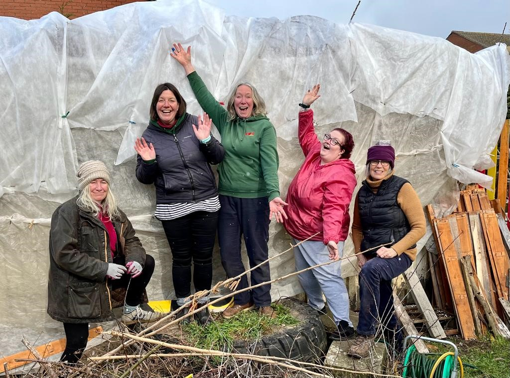
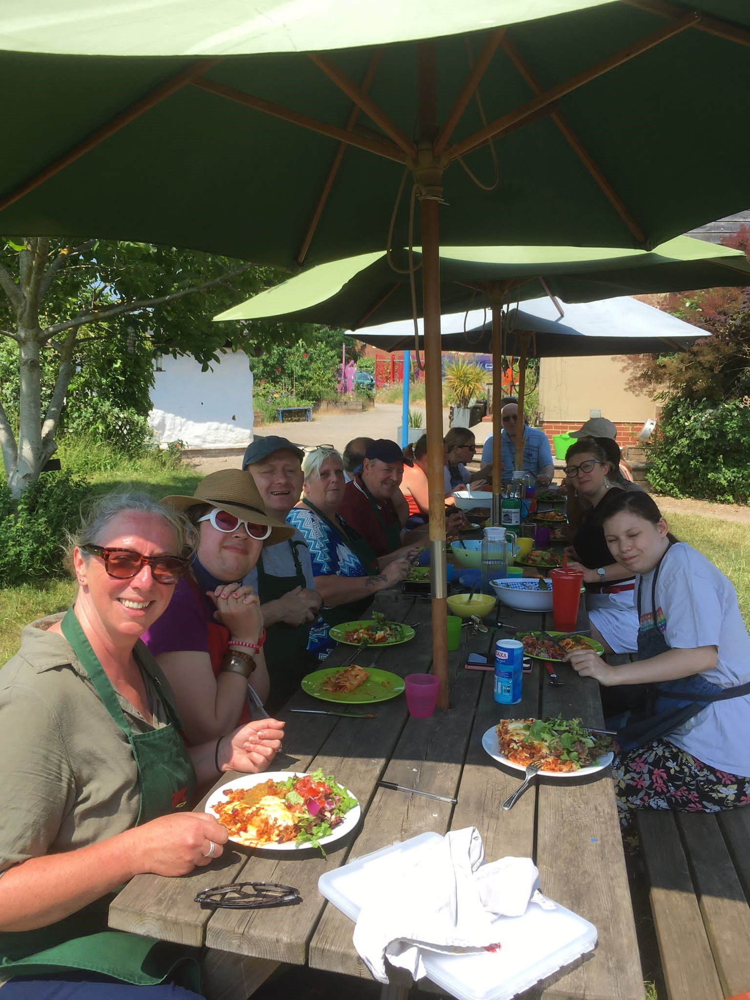

Get Involved
Find your nearest garden, volunteer, join an event, or get in touch with us.
There are many ways to be part of Nottingham Growing Network.



Get in touch with NGN for general enquiries, partnerships or media requests.
Common questions about getting involved with NGN.